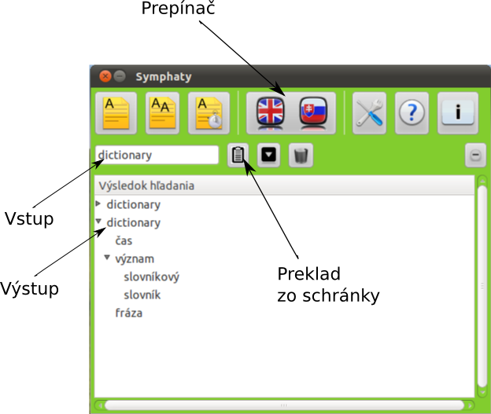

Základy
V tejto sekcii sa oboznámime so základnými funkciami slovníka, konkrétne týmito:
Preklad slova zo vstupného poľa
Na obrázku vidíme popis grafického rozhrania. Aby sme preložili slovo, napíšeme
slovo do časti označenej na obrázku s názvom vstup. Potom stlačíme tlačidlo ENTER
na klávesnici. Objaví sa nám výstup prekladu.

Preklad slova zo schránky
Tento preklad uskutočníme tak, že označíme text, ktorý chceme prekladať
a potom stlačíme Ctrl+C, týmto dostaneme text do schránky. Potom len klikneme
na okno slovníka a stlačíme tlačidlo označené na obrázku Preklad zo schránky.
Objaví sa nám výstup prekladu.
Orientovanie sa v preklade, zmena smeru prekladu
Výsledok prekladu sa nám objaví v časti označenej na obrázku Výstup. Vidíme že ku jednému
slovu sa nám v preklade vytvoria 3 časti: čas - obsahuje časy slovesa (v prípade, že to
nie je sloveso alebo je to sloveso, ktoré nemá čas sa tam neobjaví nič), význam - obsahuje
významy slova, fráza - obsahuje frázy (zobrazí sa len ak pre dané slovo je v databáze fráza).
Zmenu smeru prekladu môžeme uskutočniť stlačením tlačidla označeného na obrázku Prepínač.